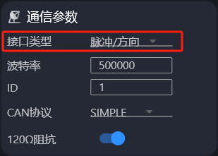

Traducción de la sección 4.5 del manual GIM6010-8 rev 2.2 (págs. 83–84 del original).
Esta función permite controlar el motor sin escobillas mediante la clásica interfaz Step/Dir (pulso/dirección), de modo compatible con los drivers de motor paso a paso convencionales. En este modo:
steps_per_circular_range). Frecuencia de Step máxima recomendada: 50 kHz.La línea de la señal Step (pulso) se conecta en la posición de CANH descrita en el apartado 2.4.1, y la de la señal Dir (dirección) en la de CANL. Esta entrada admite señales de pulso de 5 V o menos; asegúrese de que las señales Step y Dir comparten masa con el driver del motor, o podrían no reconocerse.
odrv0.config.comm_intf_mux = 2
En el Motor Wizard también puede cambiarse la interfaz física desde los parámetros de comunicación; búsquela dentro de «电机参数» (parámetros del motor).

odrv0.axis0.config.step_gpio_pin = 6 odrv0.axis0.config.dir_gpio_pin = 7
odrv0.config.gpio6_mode = GPIO_MODE_DIGITAL_PULL_UP odrv0.config.gpio7_mode = GPIO_MODE_DIGITAL_PULL_UP
odrv0.axis0.config.enable_step_dir = True
enable_step_dir a False, pasar al estado de reposo y volver después al control en lazo cerrado.Para evitar la pérdida de precisión cuando la posición objetivo crece mucho, ODrive ofrece el modo de consigna circular (circular setpoint), es decir, con envolvimiento de la posición objetivo: usar consignas cíclicas mantiene el error de coma flotante dentro de un margen controlado. Si se ordena al motor salir del rango cíclico, la consigna de posición se reajusta automáticamente para permanecer dentro de él.
Habilitar el modo de consigna circular del controlador:
odrv0.axis0.controller.config.circular_setpoints = True
Fijar el rango de posición circular (en vueltas); la consigna queda acotada entre 0 y ese valor, y al superarlo vuelve al principio:
# un ciclo completo cada 128 vueltas odrv0.axis0.controller.config.circular_setpoint_range = 128.0
Fijar cuántos pulsos STEP abarcan ese rango circular, lo que determina el desplazamiento que produce cada paso:
# 1024 pasos por vuelta odrv0.axis0.controller.config.steps_per_circular_range = 128 * 1024
odrv0.save_configuration()
Terminada esta configuración, ponga el motor en lazo cerrado en modo posición y ya podrá controlarlo por pulso/dirección.